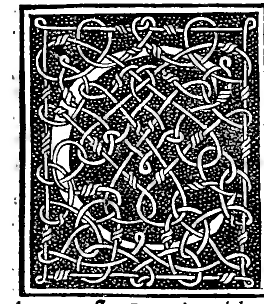

CHAPTER I¶
Epistle on the Divine Proportion to the Most Excellent Prince Ludovico Maria Sforza Anglo, Duke of Milan, Ornament of Peace and War, by Brother Luca Pacioli of Borgo Sansepolcro of the Order of Minorites, Professor of Sacred Theology

In the course of the years of our salvation 1498, on the ninth day of February, Most Exalted Duke, when I was present before Your Excellency within the impregnable citadel of Your illustrious city of Milan—the most worthy seat of Your customary residence—at that laudable and scientific duel attended by so many most celebrated and wise men of every rank, both religious and secular, in whom Your magnificent court continually abounds:
Among their number, besides the Most Reverend Lordships of Bishops, Protonotaries, and Abbots, there were from our sacred Seraphic Order the Reverend Father and sublime theologian Magister Gometius, the most worthy herald of Sacred Scripture Brother Domenico surnamed Ponzone, and the Most Reverend Father Magister Francesco Busti, currently appointed Regent of our worthy convent in Milan. And among the laymen there was first my especial patron, the Illustrious Lord Galeazzo Sanseverino, son-in-law of Your Ducal Highness and most valiant Captain General, second to none in arms today and a diligent follower of our mathematical disciplines. There were also egregious orators of the most illustrious powers, and the supreme masters of medicine and astronomy: the most renowned and acute investigator of Serapion, Avicenna, and the celestial bodies, and interpreter of future things, Ambrogio da Rosate; the most learned healer of all ailments, Aloisio Marliani; and the most perceptive observer of every branch of medicine, Gabriele Pirovano; together with Nicolò Cusano, greatly admired and venerated by all the aforesaid in every subject mentioned above, and Andrea da Novara, most skilled in the same professions; as well as other distinguished and most learned Doctors of Both Laws, and counselors, secretaries, and chancellors of Your most ornate magistracy.
In their company were the most perspicacious architects and engineers and tireless inventors of new things: Leonardo da Vinci, our Florentine compatriot, who in sculpture, bronze-casting, and painting verifies his surname against all rivals—as is manifest in the admirable and stupendous equestrian statue, whose height from the crown of the head to the level ground is 12 braccia, that is, $37\frac{4}{5}$ times the length of the line ab printed here, while its entire bronze mass amounts to nearly 200,000 pounds (where each pound consists of twelve common ounces), dedicated to the most blessed and unconquered memory of Your father, and wholly free from any envy of the steeds of Phidias and Praxiteles on Monte Cavallo; and likewise in the graceful simulacrum of the ardent desire for our salvation [The Last Supper], painted by his own hand in the worthy and devout place of bodily and spiritual refection of the sacred Temple of the Graces [Santa Maria delle Grazie], before which Apelles, Myron, Polykleitos, and the rest must today clearly yield. Nor is he satisfied with these, for having already brought to completion with all diligence his worthy book on painting and human movements, he now strives with every study to bring to due completion his inestimable work on local motion, percussion, weights, and all forces, that is, accidental weights. And beside him was Giacomo Andrea da Ferrara, as dear to him as a brother, the most accurate follower of the works of Vitruvius, yet in no way diminished in his singular military skill.
There Your Highness, with golden and mellifluous words, declared that he who is endowed with any virtue and willingly communicates it to others is worthy of the highest commendation before God and the world; for from this there arises charity toward one’s neighbor and praise and honor to oneself, in imitation of the sacred saying: Quam sine fictione didici, et sine invidia communico (“That which I learned without guile, I communicate gladly without envy,” Wisdom 7:13). The meaning of those most sweet words fixed itself so firmly in my mind that nothing was ever carved more durably in marble.
And although it was already almost innate in me by nature to practice the like toward everyone—especially in those faculties wherewith the Most High in His immense bounty was pleased to endow me above others, namely the necessary sciences and most worthy mathematical disciplines—nevertheless, already weary from laborious toils both by day and by night, bodily as well as spiritual (all of which is openly manifest to anyone who diligently examines our great work [Summa de Arithmetica, Geometria, Proportioni et Proportionalita] compiled on similar disciplines and faculties and dedicated to Your Highness’s magnanimous kinsman Guidobaldo, Duke of Urbino, together with the other matters treated in its Fifth Distinction), I had already resolved, along with others, to withdraw to a sheltered haven and reckon up my years.
Yet, greatly stirred by Your words, I took breath again upon the deserted shore; and as a seasoning to every other work of ours composed in these faculties, and for the supreme and delightful savor of all the aforesaid sciences and mathematical disciplines, for Your Ducal Highness and for the utility of Your reverent subjects, as well as for the adornment and perfect ornament of Your most worthy library—decked with an innumerable multitude of volumes in every faculty and doctrine—I resolved to compose this brief compendium and most useful treatise entitled On the Divine Proportion. Together with it I have arranged all the material models of the geometric bodies contained herein, which will arouse no less admiration in everyone who visits Your library than all the other volumes and worthy treasures preserved therein, inasmuch as these forms have hitherto remained hidden from living men.
In this work we shall speak of high and sublime things that are truly the touchstone and assaying-cup (cimento e copella) of all the aforesaid sciences and disciplines, and from which every other speculative, scientific, practical, and mechanical operation derives; without knowledge and presupposition of which it is impossible to understand or perform any human work well, as will be demonstrated. Wherefore Your Ducal Highness, with Your acute intelligence, will exhort Your courtiers and other reverent subjects to peruse it with delight, supreme pleasure, and most useful fruit. For these are not old wives’ tales (faule anili) or other ridiculous and false jests, nor mendacious and incredible poetic inventions that feed the ears with mere smoke. For although false things, according to the Philosopher [Aristotle], may be useful to us through their kinship with the true consequences that follow from them—just as the reverse is opposite to the obverse—much more will true things be useful and profitable to us, since from them nothing but truth proceeds.
And among true things, as Aristotle and Averroes affirm, our mathematical sciences are the truest and stand in the first degree of certainty (in primo gradu certitudinis), while all the natural sciences follow after them. Let this suffice as an introduction and argument for what follows. Hence it clearly appears, Most Exalted Duke, that all other sciences are matters of opinion, and that these alone deserve to be called certainties. Among physicians, for instance—Avicenna, Galen, Hippocrates, and the rest—it happens that one says the life of man resides in the heart, another in the brain, and another in the blood, each adducing many reasons and arguments in corroboration. Thus it is never good to forsake things that are certain for those that are doubtful, since the latter are called vain by the wise; whence the verse: Non debent certa pro vanis relinqui (“Certain things must not be forsaken for vain ones”). With all humility and due reverence toward Your Ducal Highness, to whom I continually and most highly commend myself: Quae felicissime ad vota valeat (“May You prosper most happily according to Your wishes”).